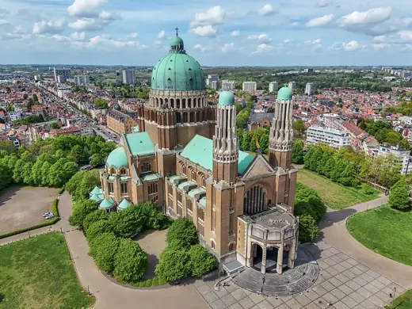
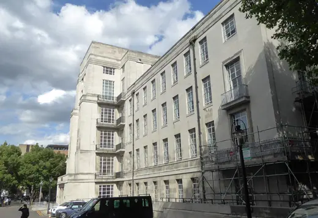
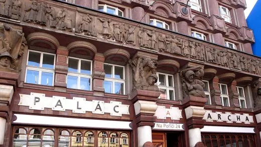
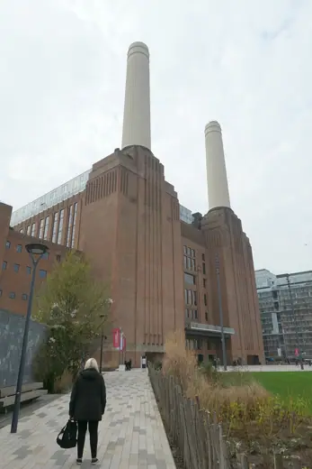
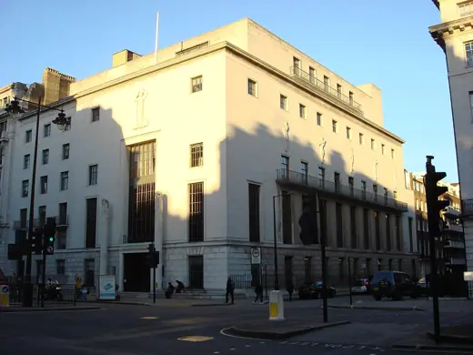
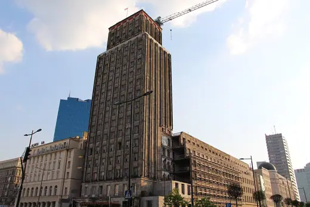

Art Deco buildings 83
Sort
 Chrysler Building1930 · New York
Chrysler Building1930 · New York Douaumont Ossuary1932 · Douaumont
Douaumont Ossuary1932 · Douaumont Australian War Memorial1941 · Canberra
Australian War Memorial1941 · Canberra 30 Rockefeller Plaza1933 · New York City
30 Rockefeller Plaza1933 · New York City Chicago Board of Trade Building1930 · Chicago
Chicago Board of Trade Building1930 · Chicago
National Basilica of the Sacred Heart1970 · Brussels Centre for Fine Arts (Bozar)1928 · Brussels
Centre for Fine Arts (Bozar)1928 · Brussels Palais de Tokyo1937 · Paris
Palais de Tokyo1937 · Paris Savoy Homann Hotel1939 · Bandung
Savoy Homann Hotel1939 · Bandung Villa Empain1934 · Brussels
Villa Empain1934 · Brussels Monumento a la Revolución1938 · Mexico City
Monumento a la Revolución1938 · Mexico City
Senate House, London1937 · London Kavanagh building1936 · Buenos Aires
Kavanagh building1936 · Buenos Aires Nebraska State Capitol1932 · Lincoln
Nebraska State Capitol1932 · Lincoln 70 Pine Street1932 · New York City
70 Pine Street1932 · New York City Manila Metropolitan Theater1931 · Manila
Manila Metropolitan Theater1931 · Manila Eltham Palace (Courtauld house)1935 · London
Eltham Palace (Courtauld house)1935 · London Great Synagogue1926 · Tel Aviv
Great Synagogue1926 · Tel Aviv Voortrekker Monument1949 · Pretoria
Voortrekker Monument1949 · Pretoria Anzac Memorial1934 · Sydney
Anzac Memorial1934 · Sydney Weston Library1940 · Oxford
Weston Library1940 · Oxford Tokyo Metropolitan Teien Art Museum1933 · Tokyo
Tokyo Metropolitan Teien Art Museum1933 · Tokyo Cincinnati Union Terminal1933 · Cincinnati
Cincinnati Union Terminal1933 · Cincinnati Maputo Cathedral1944 · Maputo
Maputo Cathedral1944 · Maputo Pacaembu Stadium1940 · São Paulo
Pacaembu Stadium1940 · São Paulo
Legiobanka (Bank of the Czechoslovak Legions)1923 · Prague Théâtre des Champs-Élysées1913 · Paris
Théâtre des Champs-Élysées1913 · Paris Radio City Music Hall1932 · New York
Radio City Music Hall1932 · New York
Battersea Power Station1955 · London Broadcasting House1932 · London
Broadcasting House1932 · London Museum of Fine Arts, Tournai1928 · Tournai
Museum of Fine Arts, Tournai1928 · Tournai Peace Hotel (Sassoon House)1929 · Shanghai
Peace Hotel (Sassoon House)1929 · Shanghai Edificio López Serrano1932 · Havana
Edificio López Serrano1932 · Havana Daily Express Building1932 · London
Daily Express Building1932 · London
RIBA Headquarters (66 Portland Place)1934 · London Tuschinski Theatre1921 · Amsterdam
Tuschinski Theatre1921 · Amsterdam Fisher Building1928 · Detroit
Fisher Building1928 · Detroit Parliament House (Eduskuntatalo)1931 · Helsinki
Parliament House (Eduskuntatalo)1931 · Helsinki Adler Planetarium1930 · Chicago
Adler Planetarium1930 · Chicago Estadio Centenario1930 · Montevideo
Estadio Centenario1930 · Montevideo Palais de Chaillot1937 · Paris
Palais de Chaillot1937 · Paris Coliseu do Porto1941 · Porto
Coliseu do Porto1941 · Porto
Prudential House1934 · Warsaw Bacardi Building1930 · Havana
Bacardi Building1930 · Havana Akureyrarkirkja1940 · Akureyri
Akureyrarkirkja1940 · Akureyri Mayakovskaya Station1938 · Moscow
Mayakovskaya Station1938 · Moscow Gyöngyös Synagogue1930 · Gyöngyös
Gyöngyös Synagogue1930 · Gyöngyös Surbiton railway station1937 · London
Surbiton railway station1937 · London